图解Stable Diffusion
AI模型最新展现出的图像生成能力远远超出人们的预期，直接根据文字描述就能创造出具有惊人视觉效果的图像，其背后的运行机制显得十分神秘与神奇，但确实影响了人类创造艺术的方式。
Stable Diffusion的发布是AI图像生成发展过程中的一个里程碑，相当于给大众提供了一个可用的高性能模型，不仅生成的图像质量非常高，运行速度快，并且有资源和内存的要求也较低。
相信只要试过AI图像生成的人都会想了解它到底是如何工作的，这篇文章就将为你揭开Stable Diffusion工作原理的神秘面纱。

Stable Diffusion从功能上来说主要包括两方面：
-
其核心功能为仅根据文本提示作为输入来生成的图像（text2img）；
-
你也可以用它对图像根据文字描述进行修改（即输入为文本+图像）。
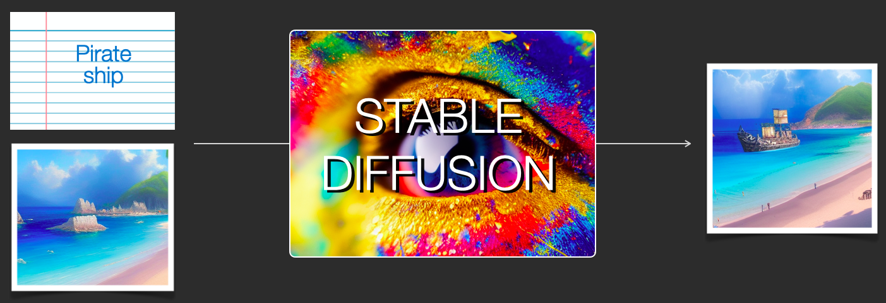
下面将使用图示来辅助解释Stable Diffusion的组件，它们之间如何交互，以及图像生成选项及参数的含义。
Stable Diffusion组件
Stable Diffusion是一个由多个组件和模型组成的系统，而非单一的模型。
当我们从模型整体的角度向模型内部观察时，可以发现，其包含一个文本理解组件用于将文本信息翻译成数字表示（numeric representation），以捕捉文本中的语义信息。
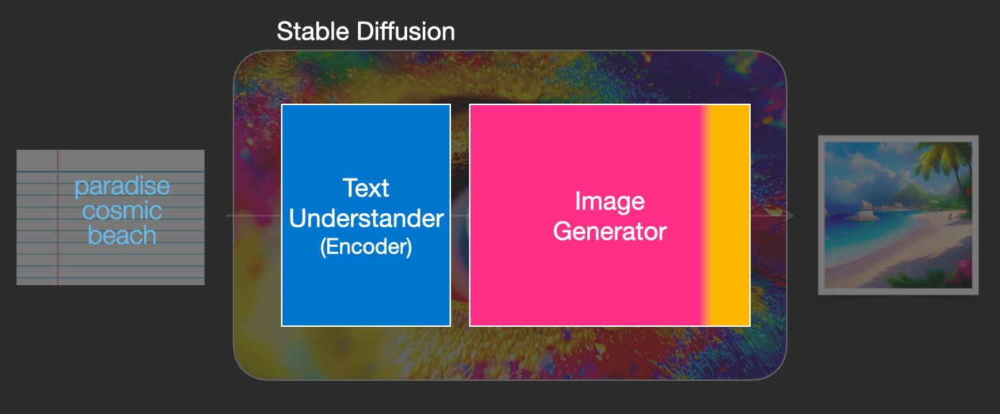
虽然目前还是从宏观角度分析模型，后面才有更多的模型细节，但我们也可以大致推测这个文本编码器是一个特殊的Transformer语言模型（具体来说是CLIP模型的文本编码器）。
模型的输入为一个文本字符串，输出为一个数字列表，用来表征文本中的每个单词/token，即将每个token转换为一个向量。
然后这些信息会被提交到图像生成器（image generator）中，它的内部也包含多个组件。
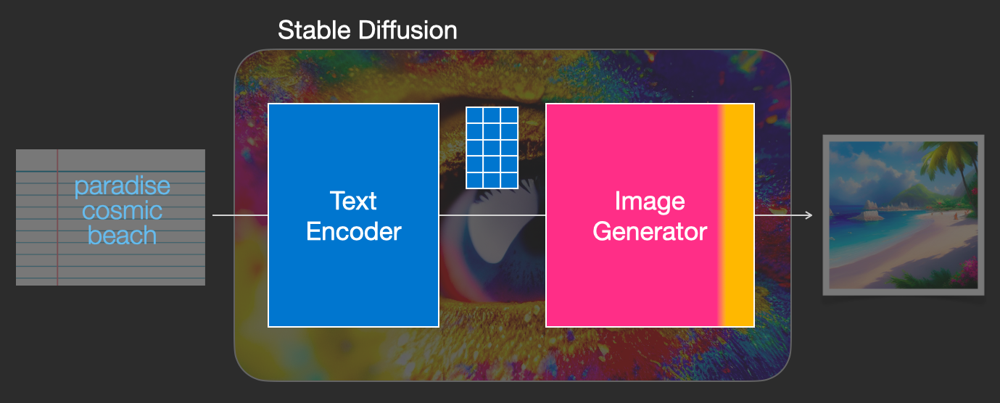
图像生成器主要包括两个阶段：
1. Image information creator
这个组件是Stable Diffusion的独家秘方，相比之前的模型，它的很多性能增益都是在这里实现的。
该组件运行多个steps来生成图像信息，其中steps也是Stable Diffusion接口和库中的参数，通常默认为50或100。
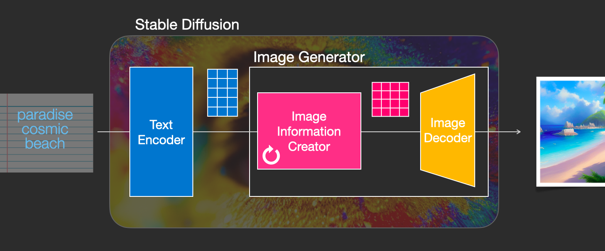
图像信息创建器完全在图像信息空间（或潜空间）中运行，这一特性使得它比其他在像素空间工作的Diffusion模型运行得更快；从技术上来看，该组件由一个UNet神经网络和一个调度（scheduling）算法组成。
扩散（diffusion）这个词描述了在该组件内部运行期间发生的事情，即对信息进行一步步地处理，并最终由下一个组件（图像解码器）生成高质量的图像。
2. 图像解码器
图像解码器根据从图像信息创建器中获取的信息画出一幅画，整个过程只运行一次即可生成最终的像素图像。
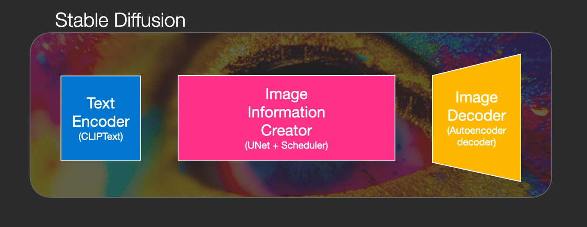
可以看到，Stable Diffusion总共包含三个主要的组件，其中每个组件都拥有一个独立的神经网络：
1）Clip Text用于文本编码。
输入：文本
输出：77个token嵌入向量，其中每个向量包含768个维度
2）UNet + Scheduler在信息（潜）空间中逐步处理/扩散信息。
输入：文本嵌入和一个由噪声组成的初始多维数组（结构化的数字列表，也叫张量tensor）。
输出：一个经过处理的信息阵列
3）自编码解码器（Autoencoder Decoder），使用处理过的信息矩阵绘制最终图像的解码器。
输入：处理过的信息矩阵，维度为（4, 64, 64）
输出：结果图像，各维度为（3，512，512），即（红/绿/蓝，宽，高）
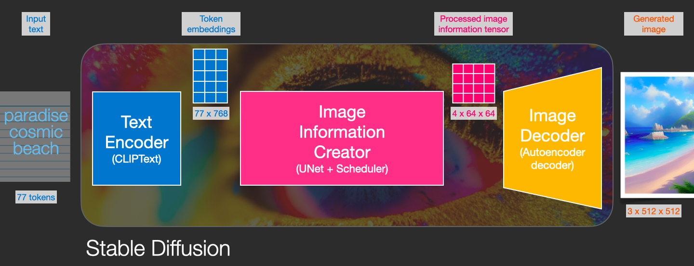
什么是Diffusion？
扩散是在下图中粉红色的图像信息创建器组件中发生的过程，过程中包含表征输入文本的token嵌入，和随机的初始图像信息矩阵（也称之为latents），该过程会还需要用到图像解码器来绘制最终图像的信息矩阵。

整个运行过程是step by step的，每一步都会增加更多的相关信息。
为了更直观地感受整个过程，可以中途查看随机latents矩阵，并观察它是如何转化为视觉噪声的，其中视觉检查（visual inspection）是通过图像解码器进行的。
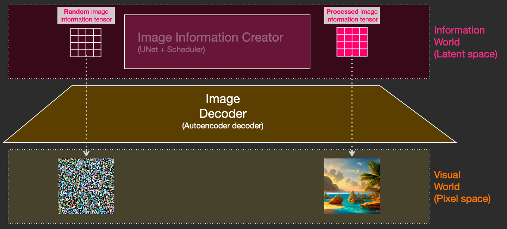
整个diffusion过程包含多个steps，其中每个step都是基于输入的latents矩阵进行操作，并生成另一个latents矩阵以更好地贴合「输入的文本」和从模型图像集中获取的「视觉信息」。
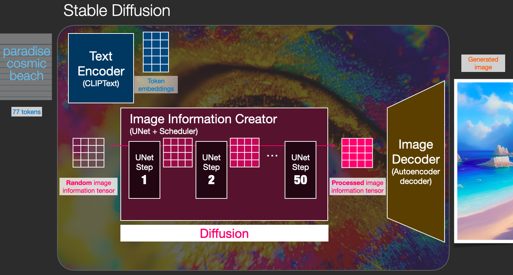
将这些latents可视化可以看到这些信息是如何在每个step中相加的。

整个过程就是从无到有，看起来相当激动人心。
步骤2和4之间的过程转变看起来特别有趣，就好像图片的轮廓是从噪声中出现的。
Diffusion的工作原理
使用扩散模型生成图像的核心思路还是基于已存在的强大的计算机视觉模型，只要输入足够大的数据集，这些模型可以学习任意复杂的操作。
假设我们已经有了一张图像，生成产生一些噪声加入到图像中，然后就可以将该图像视作一个训练样例。
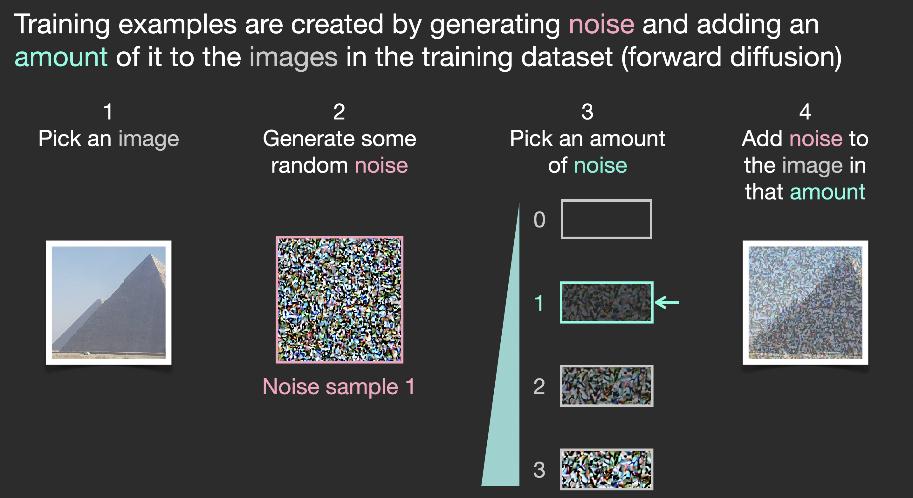
使用相同的操作可以生成大量训练样本来训练图像生成模型中的核心组件。
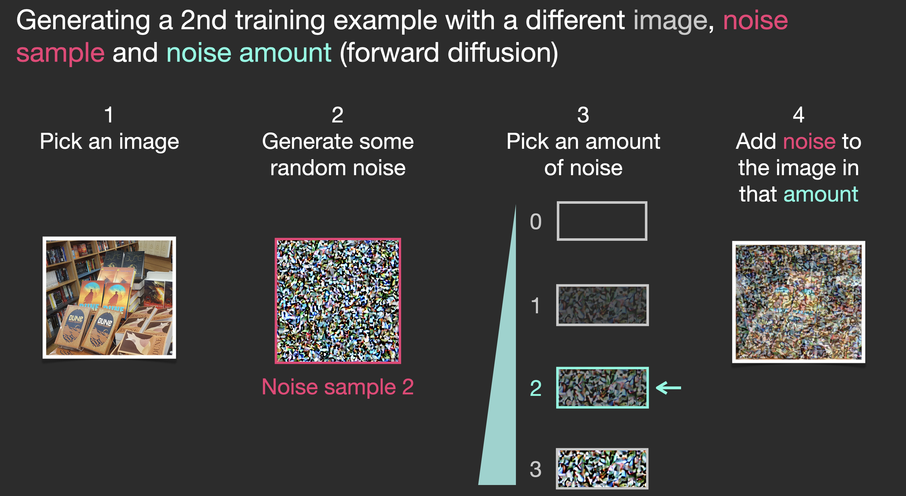
上述例子展示了一些可选的噪声量值，从原始图像(级别0，不含噪声)到噪声全部添加(级别4) ，从而可以很容易地控制有多少噪声添加到图像中。
所以我们可以将这个过程分散在几十个steps中，对数据集中的每张图像都可以生成数十个训练样本。
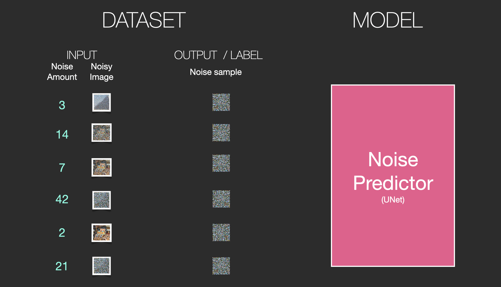
基于上述数据集，我们就可以训练出一个性能极佳的噪声预测器，每个训练step和其他模型的训练相似。当以某一种确定的配置运行时，噪声预测器就可以生成图像。
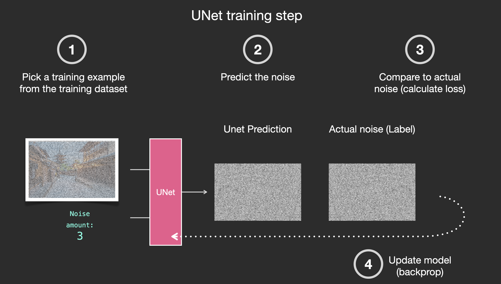
移除噪声，绘制图像
经过训练的噪声预测器可以对一幅添加噪声的图像进行去噪，也可以预测添加的噪声量。
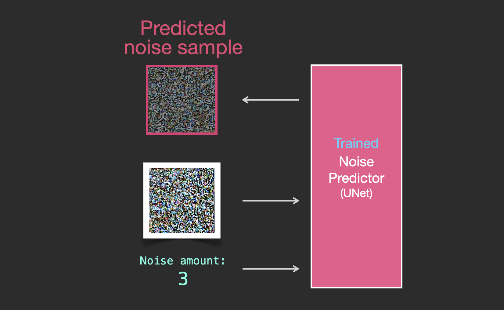
由于采样的噪声是可预测的，所以如果从图像中减去噪声，最后得到的图像就会更接近模型训练得到的图像。
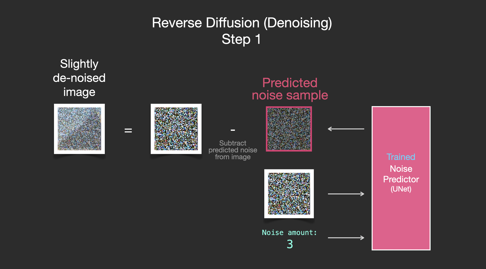
得到的图像并非是一张精确的原始图像，而是分布（distribution），即世界的像素排列，比如天空通常是蓝色的，人有两只眼睛，猫有尖耳朵等等，生成的具体图像风格完全取决于训练数据集。
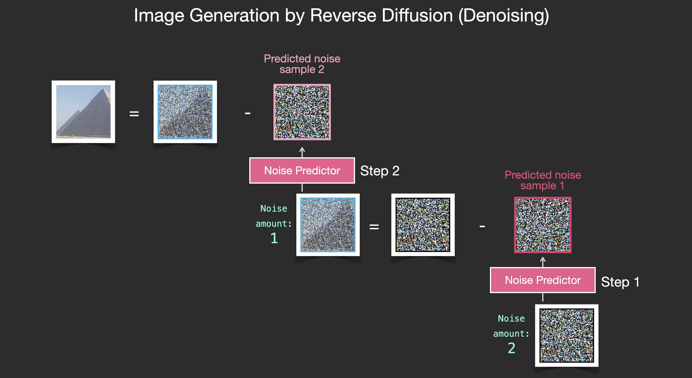
不止Stable Diffusion通过去噪进行图像生成，DALL-E 2和谷歌的Imagen模型都是如此。
需要注意的是，到目前为止描述的扩散过程还没有使用任何文本数据生成图像。因此，如果我们部署这个模型的话，它能够生成很好看的图像，但用户没有办法控制生成的内容。
在接下来的部分中，将会对如何将条件文本合并到流程中进行描述，以便控制模型生成的图像类型。
加速：在压缩数据上扩散
为了加速图像生成的过程，Stable Diffusion并没有选择在像素图像本身上运行扩散过程，而是选择在图像的压缩版本上运行，论文中也称之为「Departure to Latent Space」。
整个压缩过程，包括后续的解压、绘制图像都是通过自编码器完成的，将图像压缩到潜空间中，然后仅使用解码器使用压缩后的信息来重构。
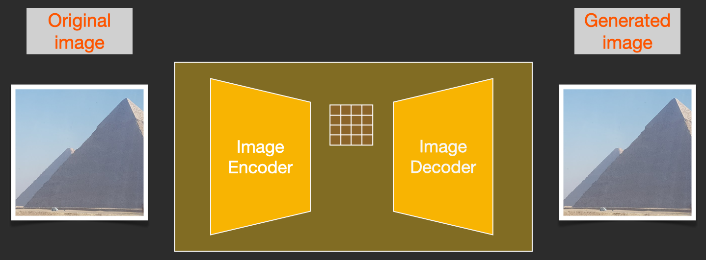
前向扩散（forward diffusion）过程是在压缩latents完成的，噪声的切片（slices）是应用于latents上的噪声，而非像素图像，所以噪声预测器实际上是被训练用来预测压缩表示（潜空间）中的噪声。
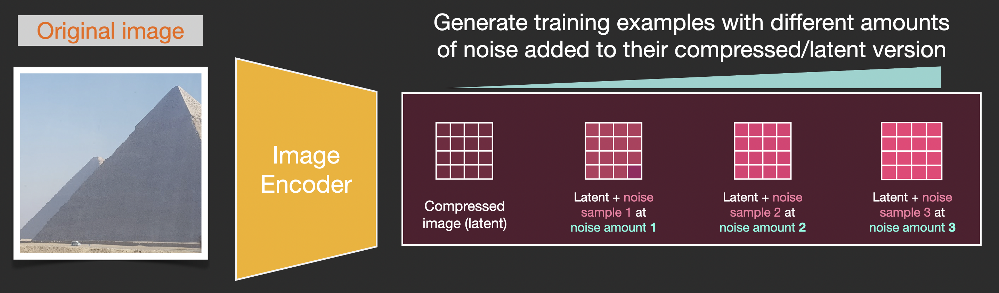
前向过程，即使用使用自编码器中的编码器来训练噪声预测器。一旦训练完成后，就可以通过运行反向过程（自编码器中的解码器）来生成图像。
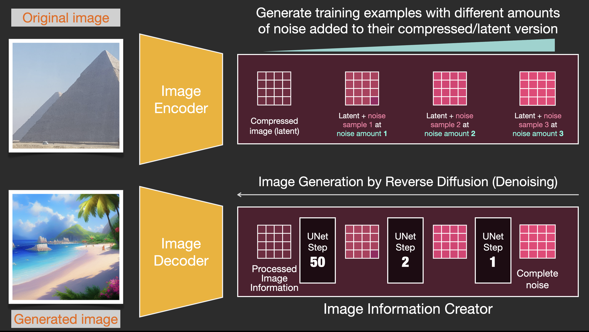
前向和后向过程如下所示，图中还包括了一个conditioning组件，用来描述模型应该生成图像的文本提示。
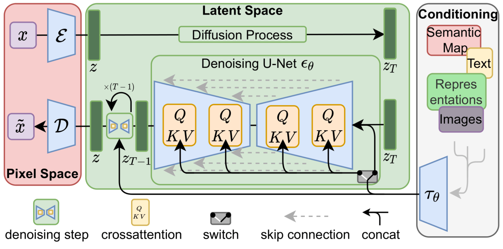
文本编码器：一个Transformer语言模型
模型中的语言理解组件使用的是Transformer语言模型，可以将输入的文本提示转换为token嵌入向量。发布的Stable Diffusion模型使用 ClipText (基于 GPT 的模型) ，这篇文章中为了方便讲解选择使用 BERT模型。
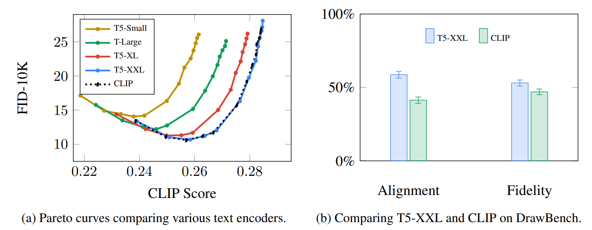
Imagen论文中的实验表明，相比选择更大的图像生成组件，更大的语言模型可以带来更多的图像质量提升。
早期的Stable Diffusion模型使用的是OpenAI发布的经过预训练的 ClipText 模型，而在Stable Diffusion V2中已经转向了最新发布的、更大的CLIP模型变体OpenClip.
CLIP是怎么训练的？
CLIP需要的数据为图像及其标题，数据集中大约包含4亿张图像及描述。
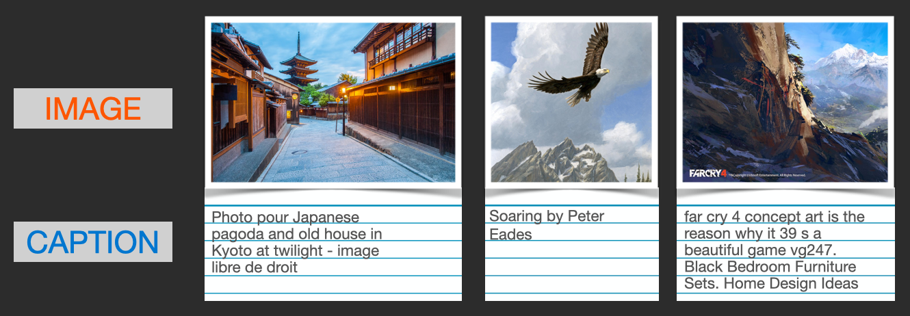
数据集通过从网上抓取的图片以及相应的「alt」标签文本来收集的。
CLIP 是图像编码器和文本编码器的组合，其训练过程可以简化为拍摄图像和文字说明，使用两个编码器对数据分别进行编码。
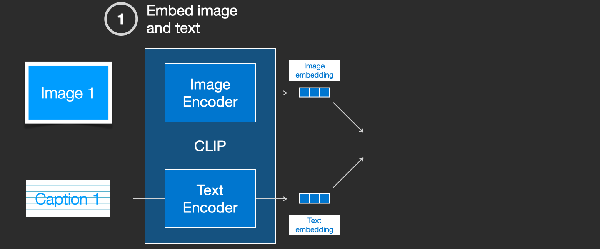
然后使用余弦距离比较结果嵌入，刚开始训练时，即使文本描述与图像是相匹配的，它们之间的相似性肯定也是很低的。
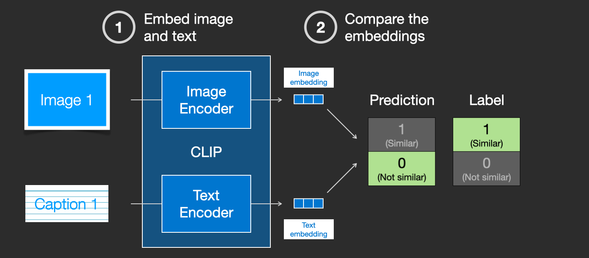
随着模型的不断更新，在后续阶段，编码器对图像和文本编码得到的嵌入会逐渐相似。
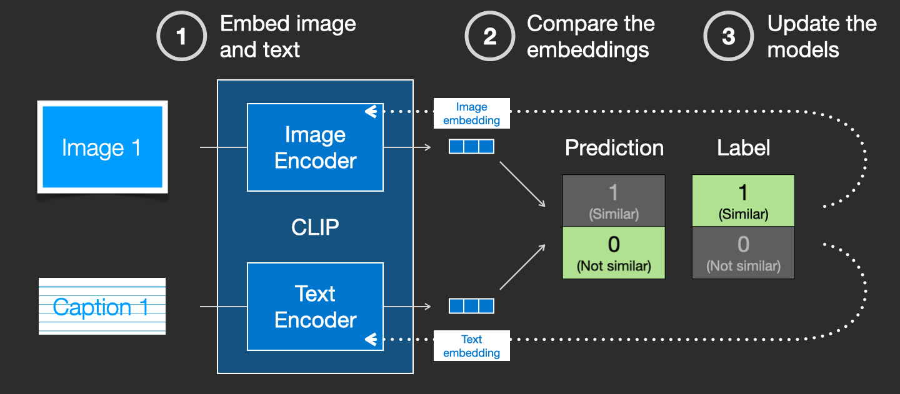
通过在整个数据集中重复该过程，并使用大batch size的编码器，最终能够生成一个嵌入向量，其中狗的图像和句子「一条狗的图片」之间是相似的。
就像在 word2vec 中一样，训练过程也需要包括不匹配的图片和说明的负样本，模型需要给它们分配较低的相似度分数。
文本信息喂入图像生成过程
为了将文本条件融入成为图像生成过程的一部分，必须调整噪声预测器的输入为文本。
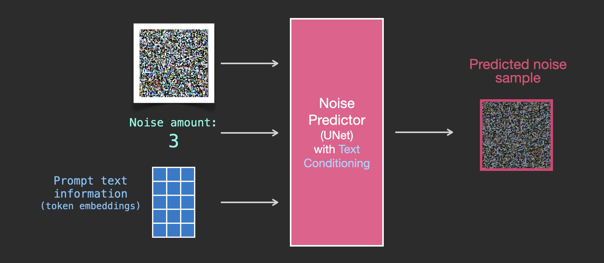
所有的操作都是在潜空间上，包括编码后的文本、输入图像和预测噪声。
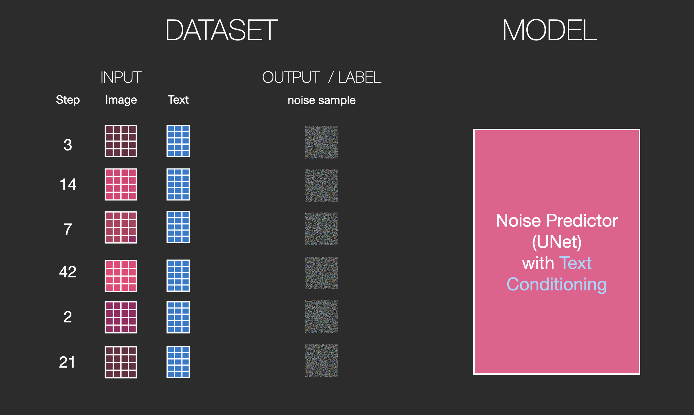
为了更好地了解文本token在 Unet 中的使用方式，还需要先了解一下 Unet模型。
Unet 噪声预测器中的层（无文本）
一个不使用文本的diffusion Unet，其输入输出如下所示：
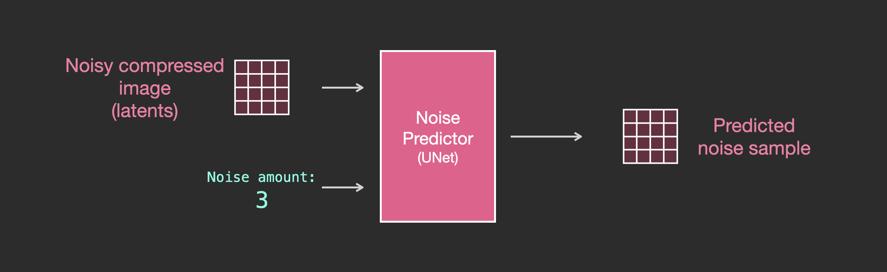
在模型内部，可以看到：
1. Unet模型中的层主要用于转换latents；
2. 每层都是在之前层的输出上进行操作；
3. 某些输出（通过残差连接）将其馈送到网络后面的处理中
4. 将时间步转换为时间步长嵌入向量，可以在层中使用。
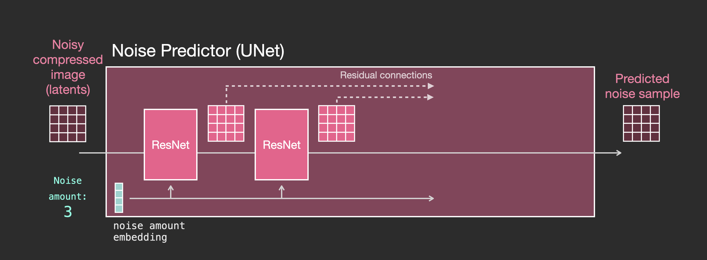
Unet 噪声预测器中的层（带文本）
现在就需要将之前的系统改装成带文本版本的。
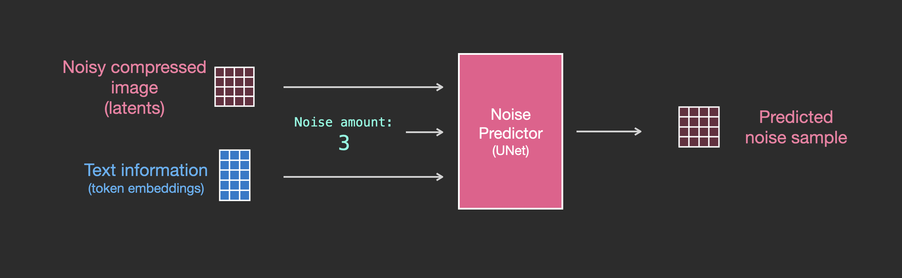
主要的修改部分就是增加对文本输入（术语：text conditioning）的支持，即在ResNet块之间添加一个注意力层。
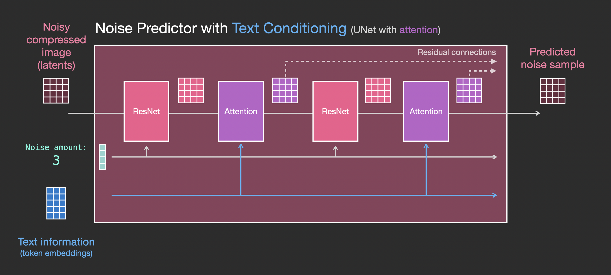
需要注意的是，ResNet块没有直接看到文本内容，而是通过注意力层将文本在latents中的表征合并起来，然后下一个ResNet就可以在这一过程中利用上文本信息。